A thing to know
- Foreign students are welcomed by most countries in the world. But students get attracted by the well known universities only.
- Well known universities provide well infrasructue with good area and good studying backgrounds.
- Although well known universities provide good services have very well qualified teachers and a productive environment they are quite expensive and most students could not afford them.
- Most universities provide scholarshis to meritious students but you can never be sure with the scholarships.
- It is always better to have a backup for every students for they do not qualify in the universities of their choice or for even if they qualify may not bear economical load.
- For every students attracted to foreign land must also be able to cope up in new environment and they should also be able to accept the cultural changes.
- If you remain flexible with the sorronding and adapt according to it you are always going to enjoy the foreign land and new style of living.
Medical colleges in India.
Every Indian universities accepts foreign students for medical education.Government of India has allowed universites to intake upto 15% of total students.
- All students interested to take admission in India are required to qualify NEET examination.
- Students from India are also required to pass NEET examination to take examination in foreign universities.
- AIIMS is the most reputed institute providing medical education in India.
- Only AIIMS Delhi accepts foreign students.
- There are seven seats for foreign students in AIIMS Delhi.
AIIMS
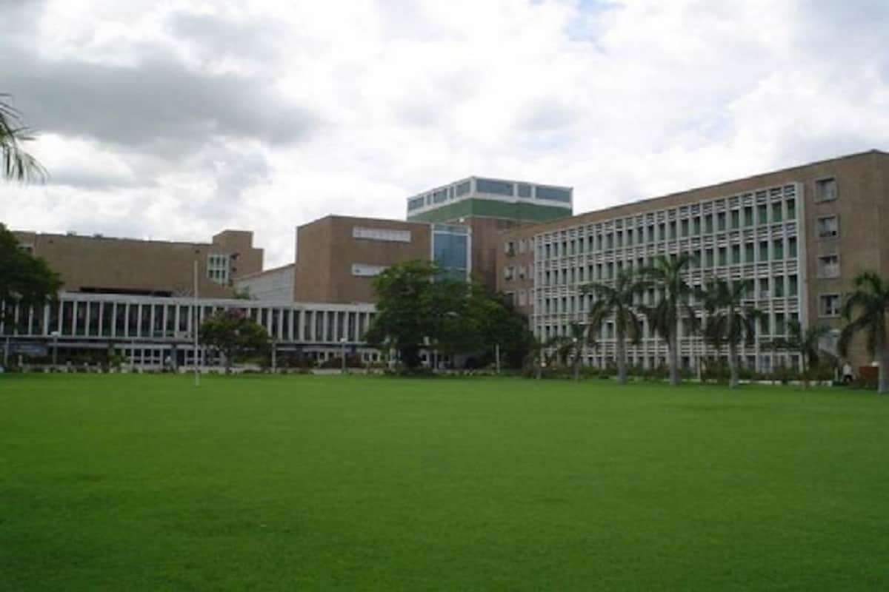
- AIIMS stands for ALL India Institute of Medical Sciences.
- AIIMS was established in 1952 and AIIMS Delhi was the first AIiMS to be established.
- AIIMS are regsrded as the best medical colleges in India.
- At present there are 16 AIIMS college all over the country.
- 8 AIIMS colleges are in development.
- In total 1207 students are recruted by AIIMS
| Name | Location | Total students | Foreign students |
|---|---|---|---|
| AIIMS Delhi | New Delhi | 107 | 7 |
| AIIMS Bhopal | Madhya Pradesh | 100 | 0 |
| AIIMS Bhuwaneshwor | Odisha | 100 | 0 |
| AIIMS Jodhpur | Rajsthan | 100 | 0 |
| AIIMS Patna | Bihar | 100 | 0 |
| AIIMS Raipur | Chattisgadh | 100 | 0 |
| AIIMS Rishikesh | Uttrakhand | 100 | 0 |
| AIIMS Raebareli | Uttar Pradesh | 50 | 0 |
| AIIMS Nagpur | Maharastra | 100 | 0 |
| AIIMS Mangalgiri | Andhra Pradesh | 100 | 0 |
| AIIMS Gorakhpur | Uttar Pradesh | 50 | 0 |
| AIIMS Bibinagar | Telengana | 50 | 0 |
| AIIMS Bhatinda | Punjab | 50 | 0 |
| AIIMS Kalyani | West Bengal | 50 | 0 |
| AIIMS Deogarh | Jharkhand | 50 | 0 |
| AIIMS Telangana | Telengana | 54 | 0 |
| AIIMS Jammu | J&K | 50 | 0 |
Some colleges are still in phase of development and the colleges in those stages are listed below:
| S.No | Name | Location |
|---|---|---|
| 1 | AIIMS Madurai | Tamil Nadu |
| 2 | AIIMS Rajkot | Gujrat |
| 3 | AIIMS Vijaypur | J&K |
| 4 | AIIMS Awantipora | J&K |
| 5 | AIIMS Bilaspur | Himanchal Pradesh |
| 6 | AIIMS Chandsari | Assam |
| 7 | AIIMS Reari | Haryana |
| 8 | AIIMS Darbhanga | Bihar |
AIIMS Delhi
- AIIMS Delhi is the first AIIMS established.
- AIIMS Delhi has been ranked no 1 twice by NIRF (It is a institution which ranks the medical institutes all over the country)
- AIIMS Delhi has global ranking of 732 among the universities of the world
- AIIMS Delhi is ranked 1 among best medical college in South Asia and ranked 231 in world .
- AIIMS offer both undergraduate and post-graduate courses.
Location of AIIMS
AIIMS is located in Ansari Nagar New Delhi,India.
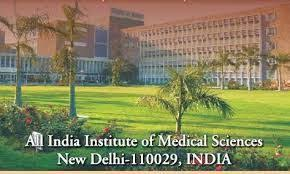
Courses covered in AIIMS
| Branch | Undergraduate | Post graduate |
|---|---|---|
| Medicine | MBBS | MD/MS/MCh |
| Dentistry | MDS/AIPGDE | |
| Nursing | B.Sc(Hons) B.Sc(Post Basic) |
M.Sc(Nursing) |
| Biotechnology | M.Biotech | |
| Paramedical | B.Sc(Hons) in Medical Technology in radiography Bachelor of Optometry MD |
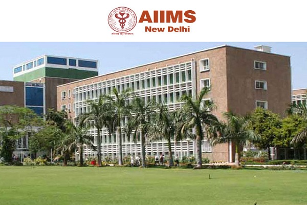
Other courses offered in AIIMS are
- DM/MCh the courses is super specialization in field of medicine
- Ph.D in medicine
Are you eligible for AIIMS ?
The eligibility critria of AIIMS are:
- Students should have passd 10+2 with minimum 60% in PCB (50% for reserved candidates)
- Studentsd should have to clear AIIMS entrance test
- The age limit of candidaes is 17 years as on 31st December.
- Candidatews must be unmarried.
Required documents for admission in AIIMS
Documents required for Indian students.
- 10+2 certificate or equivalent examinations, showing the subject offered by him/her in te examination.
- School Leaving Certificate showing date of birth.
- MIgration Certificate from the University/Board.
- SC/ST Certificate issued by the competent authority.
- OBC candidates should not belong to Creamuy layer. OBC certificate must be in the prescribed format.
Information for foreign students
- Foreign candidates do not need to give AIIMS examination.
- Foreign students are send to AIIMS from these government bodies:
- Ministry of External Affairs
- Foreign students from Indian Council of Cultural Relations.
AIIMS courses
| Popular Courses | Duration | Fees(IC) |
|---|---|---|
| MBBS | 5 years 6 months | 7,640 |
| MD | 3 years | 6875 |
| MS | 3 years | 5,831 |
| MDS | 3 years | 5,831 |
| DM | 3 years | 6,875 |
| M. Ch | 3 years | 6,875 |
| Ph.D | 3 years | 5,885 |
| M.Sc | 2 years | 2,485 |
Details of all courses offerd in AiIMS in post-graduate level
- MD/MS/MDS
- Anatomy
- Biochemistry
- Biophysics
- Community Medicine
- Emergency Medicine
- Forensic Medicine
- Lab Medicine
- Microbiology
- Pediatrics
- Pallitie Medicine
- Pharmacology
- Physical Medicine & Rehabilitation
- Physiology
- Psychiatry
- Radiotherapy
- Surgery
- Transfusion Medicine
- M.Sc
- Cardiovascular Imaging and Endovascular Technologies
- Nuclear Medicine technology
- Urology technology
- Anatomy
- Biochemistry
- Biophysics
- Physiology
- Pharmacology
- Reproductive Biology and Clinical Embryology
- M.Ch
- C.T.V.S
- Neuro-Surgery
- G.I Surgury
- Pediatric Surgery
- Urology
- Minimal Access surgery and General Surgery
- Breast,Endocrine, and General Surgery
- Surgery Oncology
- Plastic and Reconstructivr Surgery
- Trauma Surgery and Critical Care
Other medical colleges in India
Post Graduate institute of Medical Education and Research(PGiMER)
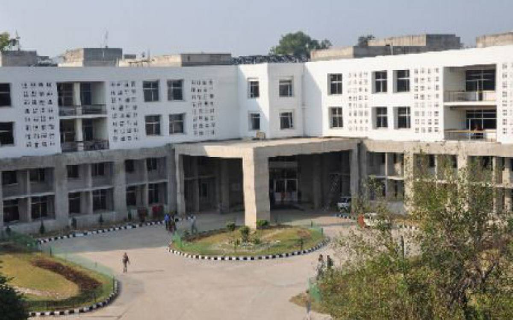
- The institute is located in Chandigarh.
- PGMERoffers various UG, PG, and Doctorate level courses like B.Sc, B.Ph.T, MD, MS, MDS, DM, M.Ch, MHA, MPH, M.Sc, Fellowship PGI , Post-Doctorate Fellowship PGI, and Ph.D courses
- All the admission is done on the basis of PGIMER basis.
Christian Medical College
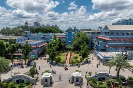
- Christian medical campus is established in Vellore.
- It offers courses like MBBS, B.Sc(Nursing), BPT, BPO, BOT, BASLP, MD/MS, M.CH, Diploma, DM, M.Tech, M.PhiL, MPH, MHA, M.Sc, PG Diploma, MPT, Fellowship courses
- Admission for MBBS is done by NEET
- Admission in MD/MS is done on NEET(PG>
- Admission in DM/M.Ch,PG Diploma,Fellowship and Post-Doctoral Fellowship is done by CBT score of campus.
Sanjay Gandhi Postgraduate Institute of Medical Sciences
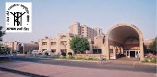
- Sanjay Gandhi Postgraduate Institute of Medical Sciences is aprivate institute located in Lucknow.
- SGPGIMS offers B.Sc, BPT, MD, MHA, M.Sc, DM, M.Ch, Post-Doctoral Fellowship.
- Admission in MD is done on the basis of NEET PG.
- For all the courses other than Ph.D and PDC are done on the basis of entrance test.
- Ph.d PDC courses are selected by entrance and interview.
Amrita Vishwa Vidyapeetham
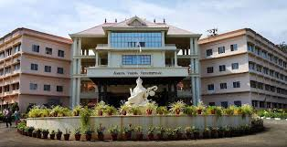
- Amrita Vishwa Vidyapeetham was established in Coimbatore.
- The university offers various UG, PG and doctorate level courses.
- In medical sector, it offers MBBS, MD, DM, M.CH,PG Diploma and MS courses.
- All the students are selected by NEET
- Candidates have to appear in entrance test conducted by the university to seek admission for PG Diploma
Banaras Hindu university
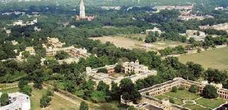
- BHU is located in Varanadi.
- BHU offers a variety range of courses but in medical sector it offers courses like MBBS, MD, M.Ch, MS and DM.
- Admission in all the courses are done by entrance examination conducted by the University
Kasturba Medical College
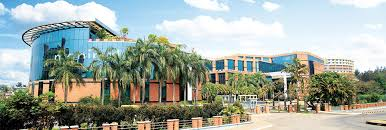
- Kasturba Medical College is situated in Manipal,Karnataka.
- It offers courses like MBBS, M.Sc, MD, MS, MCh, PhD, PG, Diploma and M.Phil.
- All the admission are done on the basis of NEET exam conducted for different levels.
Jawaharlal Institute of PostGraduate Medical Education & Research
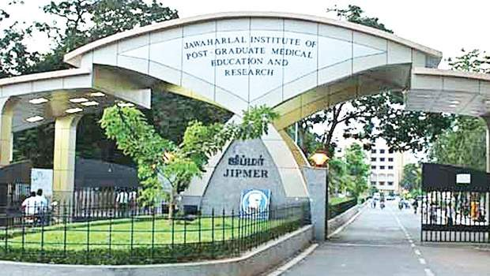

- Jawaharlal Institute of PostGraduate Medical Education & Research(JIPMER) is an anonymous university establised in Puducherry.
- It offers MBBS, MD, MS, DM, M.Ch, Diploma, Ph.D, Fellowship, B.Sc, MSc, MPH courses.
- All the admission are conducted through NEET examination at various levels.
Institute of Liver and Billiary science
- Institute of Livver and Billiary Science(ILBS) is located in Delhi
- ILBS offers courses like DM, M.CH, DNB, Ph.D, PDCC
- Admissiom in all level except Ph.D level is conducted by entrance examinaton condcted by universiy.
- Admission in Ph.D level is conducted by the university itself followed by an interview.
King George's medical University
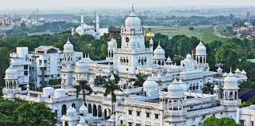
- King George's Medical Clollege is a state university established in lucknow.
- The university offers courses like MBBS, BDS, B.SC(Nursing), B.Opt,MD,MS,MDS,MHA,MHPEE,PG Diploma, DM, M.CH, Ph.D, M.Phil, Post-MD, Ph.D, Diploma, Fellowship, and Post-Doctoral Fellowship.
- Admission in various sector are done by NEET examination of respective level.
Other medical campuses across India
- Sri Ramachandra Institute of Higher Education and Research(SRIHER) located in Chennai
- St John's Medical College located in Bangalore
- Alligarh Muslim Ubiversity located in Aligarh
- Maulana azad medical College located in Delhi
- Jamia Hamdard University located in Delhi
- Kasturba Medical College llocated in Mengaluru
- JSS Medical College located in Mysore
- Christian Medical College located in Ludhiyana
- Vardhman Mahavir Medical College located & Safdarjung Hospital located in Delhi
- Dr. DY Patil Vidyapeth(DPU) located in Pune.
- Siksha O' Anusandhan(SOA)located in Bhuwaneswar
- SRM Institute of Science and Technology located in Chennai
- University College of Medical Science located in Delhi
- Dayanand Medical College located in Ludhiyana
- Saveetha Institute of Medical and Technical Science located in Chhennai
- Madras Medical College located in Chennai
- Lady Hardinge Medical College located in Delhi
- Mahatma gandhi Instituteof Medical Science located in Wardha
- Osmania Medical College located in Hyderabad
- Lokmanya Tilak Municipal College located in Mumbai
- Institute of Post Graduate Medical Education and Research located in Kplkata
- B.J. Medical College located Ahemdabad
- Govenment Medical College locatedin Patiala
- Bharati Vidhyapeeth Deemed University Medical College located in Sangli